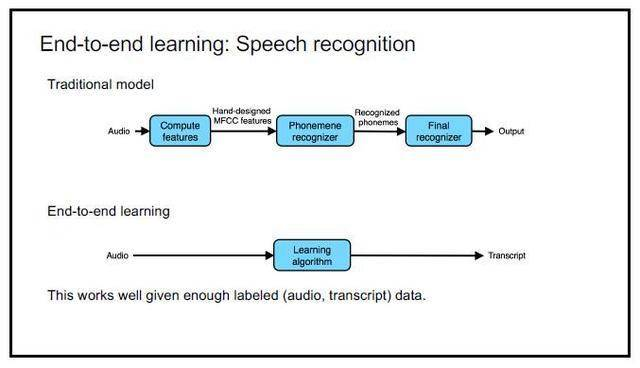

能否完全使用语义分割？
不行，由于目标数目不固定，不能让一个实例就是一个类别。一般思路是先进行目标检测，后对检测狂内的物体进行语义分割，判断检测框内语义分割结果与哪个实例掩膜最接近就认为是哪实例。
存在的问题：两个实例重叠
解决方案1：预测回归框，在回归框里进行二分类。
解决方法2：预测中心，进行聚类。
现阶段语义分割的架构旨在优化分割结果的精确性和提高分割效率。
小目标图像实例分割：存在分割准确率低、效果差，还不能完全满足实际应用的要求，存在明显的漏分割、错分割、分割边界模糊等问题。
低质量图像实例分割：环境问题：雨天，大雾，夜间，水下环境。设备问题：曝光，移动，景深。
轻量化网络架构的需求：在移动端、嵌入式设备的普及应用。
遮挡问题：物品之间存在遮挡关系。
新型网络架构：新思路的引入：TensorMask将dense的单阶段检测思想融入实例分割，Auto-DeepLab
简单来说，端到端就是任务从输入到输出之间不包含其他监督。是一套完整的体系。而非端到端则可以认为是若干子模型的整合，每个子模型需要自己单独的标签。一方面端到端可以减少标签量，另一方面则可以避免每个模块产生误差所产生的误差积累。
